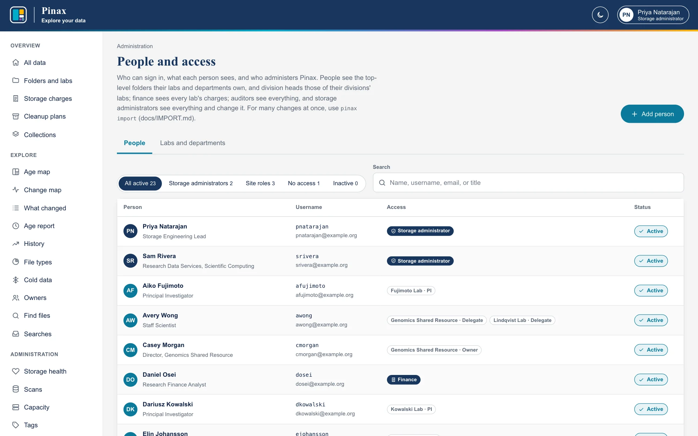
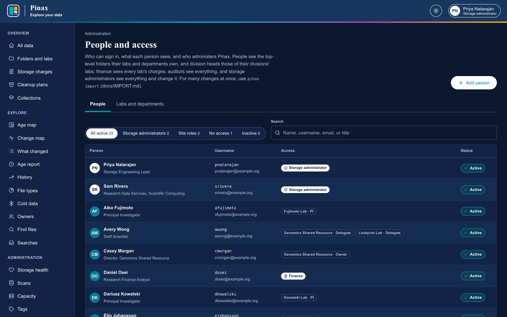
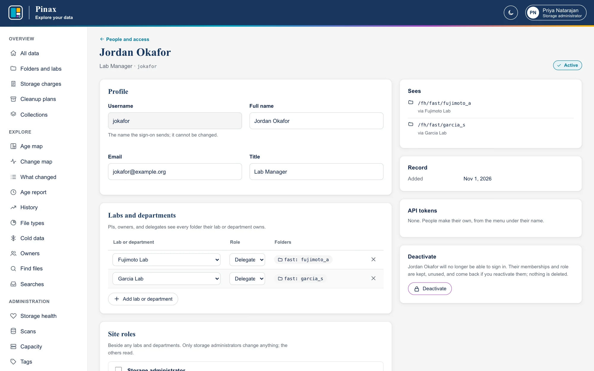
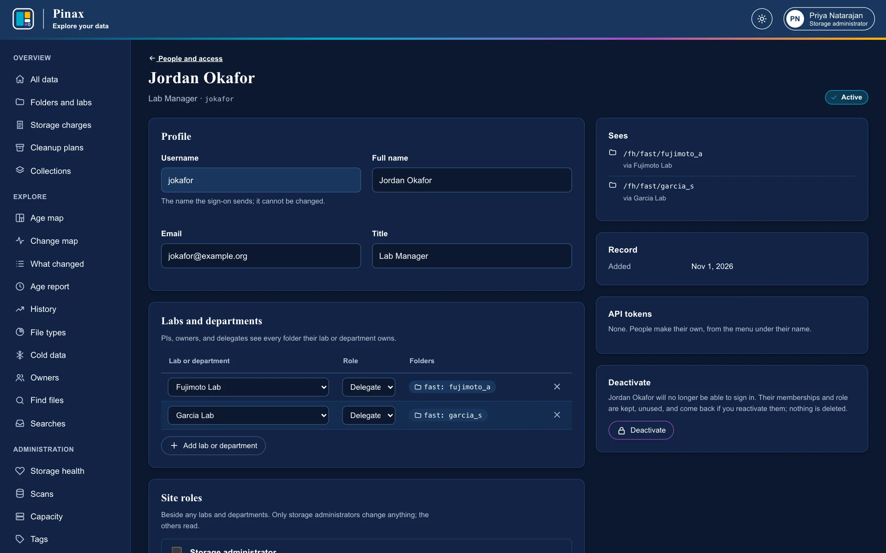
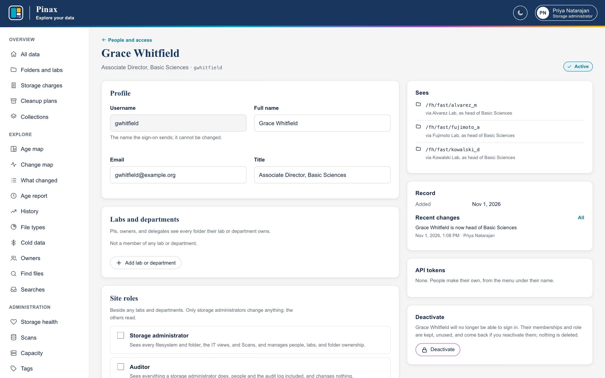
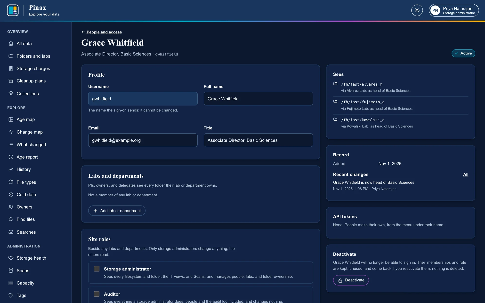
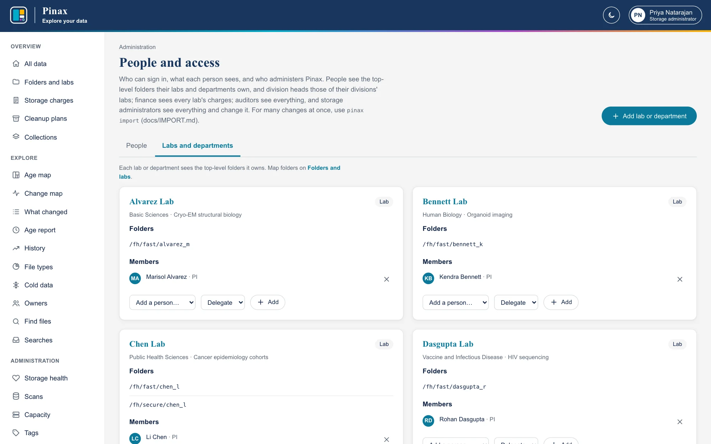
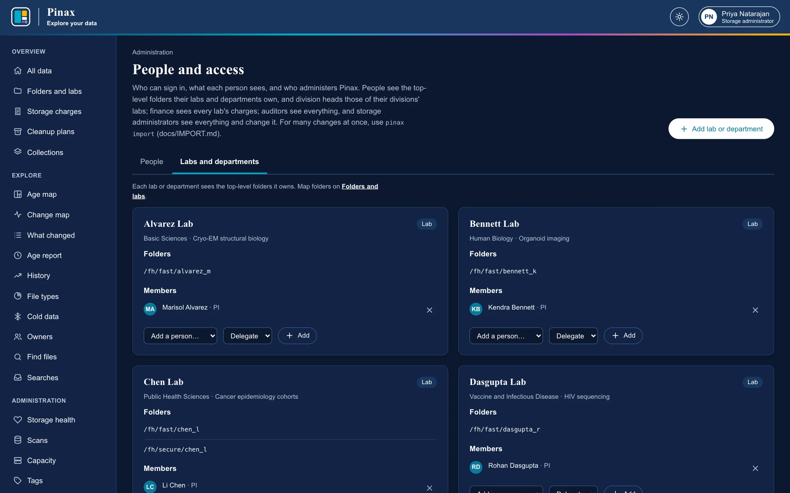
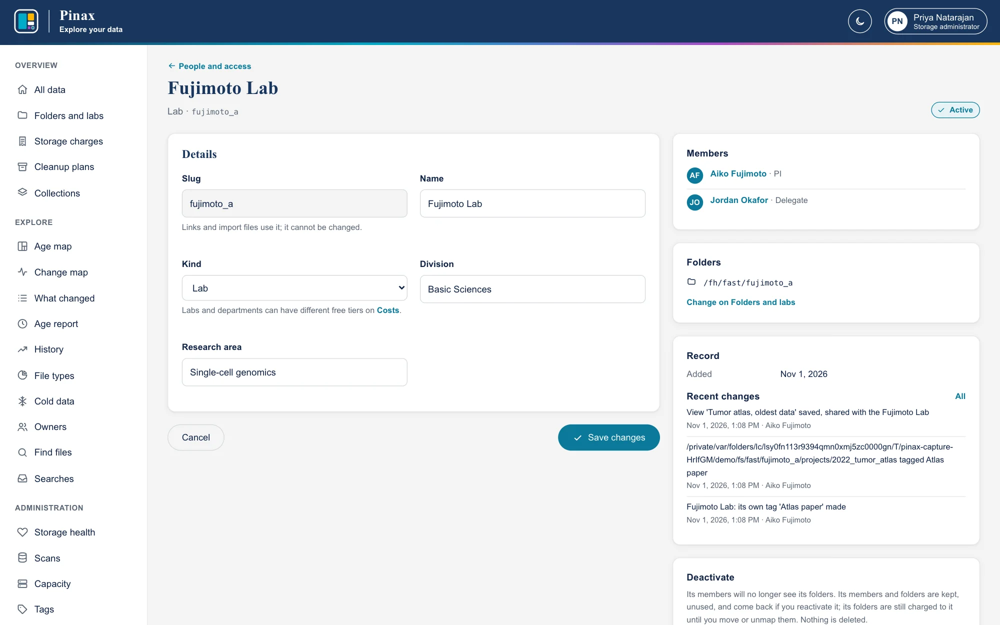
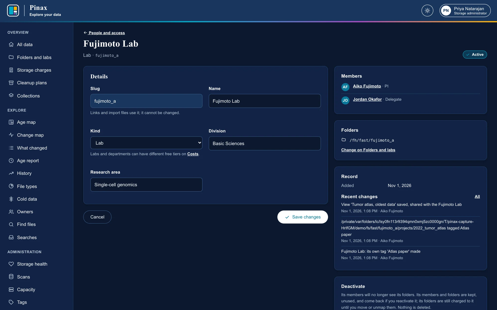

People and access
Who can sign in, what each person sees, who administers Pinax, the tokens scripts use, and reviewing it all.
People and access
Who can sign in, what each person sees, and who administers Pinax. People lists everyone, with their username, labs and roles, and status; the tabs narrow it to administrators, people with site roles, people with no access, and inactive people; Search finds by name, username, email, or title.


Add person: a username (with single sign-on, exactly the name the proxy sends; with Entra ID, usually the user principal name), a name, an email, a title, and a lab with a role. The panel shows the folders they will see before you save. A person's page has their profile, their labs and roles, the administrator role, and their recent changes from the audit log:
- Labs: add them to a lab or department as PI (or owner) or delegate, change the role, or take them out.
- Site roles: storage administrator, auditor, finance, or head of one or more divisions, beside any labs (Site roles).
- Deactivate: they cannot sign in, and their memberships and role are kept, unused, until Reactivate; their sessions end and their API tokens are revoked.
- API tokens: theirs, with when each was last used, to revoke (API tokens).
- Set a new temporary password (local sign-in): Pinax shows it once; they must change it when they next sign in. It also unlocks a locked account and ends their sessions.


Site roles
Beside lab memberships, a person can have site roles, given and taken away on their page, each change audited. A person can have several (a finance officer who is also a PI), and every role works with every way of signing in.
| Role | Sees | Changes |
|---|---|---|
| Storage administrator | Everything | Everything: people, labs, folder ownership, prices, capacity, the tags, and any lab's tags and plan |
| Auditor | Everything a storage administrator sees, people and the audit log included | Nothing |
| Finance | Every lab's and department's charges (Storage charges of any of them, Chargeback and its statement), and the prices, free tiers, and capacities behind them | Nothing; sees no folders, files, or people |
| Division head | Each lab in the divisions chosen (a lab's Division) as its members see it: its folders and every report, its charges, its plan, and its collections | Nothing: tagging and planning stay with each lab's PI and delegates |
| PI, owner, or delegate | Their lab's or department's folders and every report, its charges, plan, and collections | Its folders' tags and its cleanup plan |
With sign-in through Entra ID, a site may map some or all of these roles from Entra ID instead: those show From Entra ID on a person's page, and are set when the person signs in (Roles from Entra ID).
Pages show each person what they may use: an auditor sees the administration pages without their buttons, and finance a sidebar of charges. Every check is made on the server, for every request (Security). A division head's labs follow the labs' Division: change a lab's division, and its folders move to the new division's heads.


Labs and departments lists every lab and department with its members and folders. Add lab or department adds one: a slug (its short ID), a name, whether it is a lab or a department (which decides its free tier), its division, and its research area. A lab's page changes its details or deactivates it: its members stop seeing its folders, which stay its own, and charged to it, until they are moved.




For many people at once, pinax import reads CSV files with a dry run first (IMPORT.md).
API tokens
Scripts read Pinax, or act for someone, with API tokens instead of signing in, however people sign in (API tokens for scripts). API tokens, in the sidebar for administrators and auditors and in everyone's menu, has three lists:
- Your tokens: everyone makes their own, reading only or with their access, for a week to a year (
PINAX_TOKEN_MAX_DAYS, 365 by default). Pinax shows each once and keeps only its SHA-256. - Service tokens: for a service rather than a person, such as a finance system or a dashboard. An administrator names the service and chooses what it reads: as finance (every lab's charges, the chargeback statement, and the prices behind them) or as an auditor (everything). A service token belongs to no one, so it keeps working when whoever made it leaves, and it only reads.
- Everyone else's tokens, with when each was made, when it expires, and when and from where it was last used.
An administrator can Revoke any token, here or on its person's page; a person revokes their own. Deactivating a person revokes their tokens, and reactivating them does not bring them back. Making and revoking a token is audited, and so is every change made with one, with the token's name: with the token “…” in a person's or lab's recent changes, and token in the event's detail. No token can make or revoke tokens, or change a password.


Access review
Who has access to what, as of now, for a periodic review (a recertification) and a record that it was done. Access review, in the sidebar of administrators and auditors, has:
- Worth a look: active labs and departments with no PI or owner, people who can sign in and see nothing, API tokens that can make changes, emergency accounts (with when each was last used), and, where Pinax signs people in itself, people with access who have not signed in for 90 days. A token that can make changes is kept by a script, not behind a sign-in, so whoever has it acts as its person, with whatever access that person has now (more, if they are given more): each shows when it expires and was last used. Check that it is still used and still needs to change things; if not, revoke it and make one that only reads. An emergency account signs in with a password when sign-in with Entra ID fails (When Entra ID fails); check that each is still needed.
- Site roles: every storage administrator, auditor, finance officer, and division head, with when each was given.
- Labs and departments: each one's members and their roles, with when each was given, the heads of its division, and its folders, with when it came to own each where that was changed in Pinax.
- People: each active person's access, the folders they see and why (via a lab, or as head of a division), their live API tokens, and, with local sign-in, when they last signed in.
Find narrows every list to a person, lab, division, role, or folder. Download CSV has a row for each piece of access each person has (one saying none for someone who sees nothing), with what it lets them see and since when, for a spreadsheet or the review's record. Only active people and labs are listed: deactivated ones give no access, and are counted.
Record a review, once you have gone through it, keeps who reviewed it, when, a note, and how much access there was, in the audit log (access.reviewed); Reviews lists the latest. It changes no one's access, so auditors may record it too.
Pinax records when access was given from 0.12.0 on: a role or membership given before says Not recorded. Changing a member's role (delegate to PI) gives it again, from then.